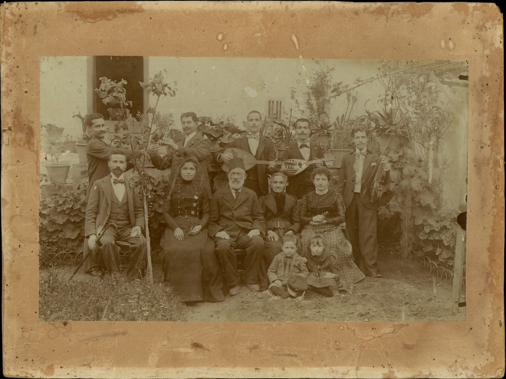

Το ερευνητικό πρόγραμμα «Οι εβραίοι της Κρήτης: ανασυγκρότηση μιας απουσίας, αφήγηση μιας παρουσίας» επικεντρώνεται στους εβραίους των Χανίων, τη μεγαλύτερη εβραϊκή κοινότητα της Κρήτης στη διάρκεια του 19ου και 20ού αιώνα. Μέσα από γραπτές, προφορικές και οπτικές πηγές μελετά την ταυτότητα και τη ζωή της κοινότητας κατά τις ταραγμένες δεκαετίες πριν τον Β' Παγκόσμιο Πόλεμο, αλλά και τη διαχείριση της μνήμης και της κληρονομιάς που άφησαν οι εβραίοι των Χανίων στην πόλη μετά τη φυσική τους εξόντωση το 1944.
ΠΕΡΙΣΣΟΤΕΡΑ

οικογένεια Χαΐμ και Ραχήλ Μινέρβο, 1906-1908, Χανιά © Εβραϊκό Μουσείο Ελλάδος
ΧΑΡΤΕΣ
Επιλέξτε έναν από τους παρακάτω χάρτες
Τέλη 19ου αιώνα - 1944
Στη στροφή του 19ου προς τον 20ό αιώνα η εβραϊκή παρουσία στην Κρήτη είναι κυρίως εντοπισμένη στην πόλη των Χανίων. Πρόκειται για μια μικρή κοινότητα 500-600 ανθρώπων. Η άλλοτε ακμάζουσα κοινότητα του Ηρακλείου είχε συρρικνωθεί ήδη στα τέλη του 18ου αιώνα, ενώ για το Ρέθυμνο δεν έχουμε συστηματικές αναφορές ...
1944 - 1999
Τα ξημερώματα της 20ής Μαΐου του 1944 οι εβραίοι των Χανίων –περίπου 250 άνδρες, γυναίκες και παιδιά– συλλαμβάνονται από τον γερμανικό στρατό κατοχής ...
ΟΙΚΟΓΕΝΕΙΕΣ - ΠΟΛΥΜΕΣΑ